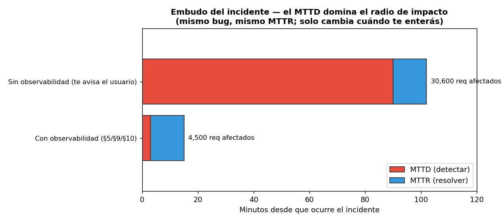

12 — Incidentes y postmortems¶
Producción no es "si falla", es "cuándo y cómo respondés"¶
Todas las secciones anteriores reducen la probabilidad de falla: reliability (§6), caching (§4), versionado seguro (§8), seguridad (§11). Pero ningún sistema real tiene probabilidad de falla cero. La pregunta final de producción no es cómo evitar todo incidente —imposible— sino cuánto tardás en enterarte, qué mirás primero, y qué aprendés después. Esa es la disciplina de respuesta a incidentes, y es lo que separa un susto de un desastre.
Analogía: el protocolo de contingencia¶
Un programa público no asume que nunca habrá un shock (una crisis, un fraude, una caída de un proveedor). Tiene protocolos de contingencia: qué se activa, quién decide, cómo se comunica, y una revisión posterior para que el próximo shock duela menos. No previene el shock; acota el daño y aprende. La respuesta a incidentes es ese protocolo para tu RAG: no evita el 503 de Anthropic, pero convierte una hora de caos en quince minutos de procedimiento.
Las piezas están en prod_lib.py (IncidentDetector,
RUNBOOKS); la demo en code/12-incident-runbooks.py;
un postmortem de ejemplo en
examples/incidents/.
Los cinco modos de falla de un RAG¶
Un sistema con LLM falla de maneras que un CRUD no: no solo "se cayó", sino "sigue
respondiendo, pero mal". El IncidentDetector traduce las señales que las
secciones previas ya emiten al modo de falla y su runbook:
graph LR
M["Métricas §5<br/>Fallos §6<br/>Calidad §9<br/>Costo §10"] --> D["IncidentDetector"]
D --> M1["provider_down"]
D --> M2["latency_blowup"]
D --> M3["hallucination"]
D --> M4["retrieval_broken"]
D --> M5["cost_runaway"]
M1 & M2 & M3 & M4 & M5 --> R["Runbook<br/>(primeros 5 min)"]
style M fill:#bdf,stroke:#333,color:#1a1a1a
style D fill:#f39c12,stroke:#333,color:#1a1a1a
style R fill:#2ecc71,stroke:#333,color:#1a1a1a| Modo | Señal que lo dispara | Lo insidioso |
|---|---|---|
| Proveedor caído | tasa de error del proveedor ↑ | Obvio, pero pánico: no martillar al caído |
| Latencia explotada | p95/p99 ↑ | Puede ser el modelo, la cola, o un timeout faltante |
| Alucinación masiva | online_pass_rate ↓ (§9) |
El servicio NO se cae: invisible para métricas de sistema |
| Retrieval roto | retrieval_score promedio ↓ |
Un cambio de embedding model rompe la dimensión del índice |
| Costo desbocado | proyección de quema ↑ (§10) | Puede ser un ataque (un usuario en loop) |
El tercero es el más peligroso justamente porque no dispara las alarmas clásicas: latencia y errores están perfectos mientras el sistema inventa artículos de ley. Por eso la pata de calidad (§9) no es opcional: es la única que ve este modo de falla.
Runbooks: bajar la carga cognitiva del peor momento¶
Un incidente es el peor momento para pensar desde cero. El runbook es qué mirar en los primeros 5 minutos, escrito en frío. Para "alucinación masiva":
1. ¿Coincide con un deploy/canary reciente (§8)? Correlacionar por prompt_ref/model.
2. Mirar el pass_rate online (§9) por variante: ¿cayó solo el candidato?
3. Rollback inmediato del canary (§8) a la versión estable.
4. Muestrear las respuestas malas por trace_id (§5) hacia el golden (§9).
5. NO 'arreglar el prompt en caliente': revertir primero, diagnosticar después.
El paso 5 es la regla de oro: revertí primero, diagnosticá después. La tentación de "lo arreglo en caliente" alarga el incidente; el rollback detiene el daño y te da tiempo de pensar con la presión apagada. Cada runbook referencia las herramientas de las secciones previas —el incidente es donde todo el toolkit se usa junto.
MTTD > MTTR: el tiempo de detectar es el que controlás¶
Hay dos relojes en un incidente: el MTTD (Mean Time To Detect, desde que ocurre hasta que te enterás) y el MTTR (Mean Time To Resolve, desde que te enterás hasta que lo arreglás). La intuición dice optimizar el MTTR; los datos dicen otra cosa:
escenario | MTTD | MTTR | requests afectados
----------------------------------------+-------+------+-------------------
Con observabilidad (§5/§9/§10) | 3m | 12m | 4,500
Sin observabilidad (te avisa usuario)| 90m | 12m | 30,600

Mismo bug, mismo MTTR de 12 minutos. La diferencia —4.500 vs 30.600 requests
afectados, 7×— la hace enteramente el MTTD. Y el MTTD es lo que más controlás:
no depende de qué tan rápido tipeás el fix, sino de si tenés una alerta sobre
la señal correcta. Un dashboard hermoso que nadie mira a las 3 AM tiene MTTD de
"hasta que un usuario se queja". Una alerta sobre el online_pass_rate tiene MTTD
de minutos. Bajar el MTTD es la mejor inversión de confiabilidad, y es barata:
las señales ya las calculamos en §5/§9/§10; falta conectarlas a una alerta.
El postmortem honesto (blameless)¶
Después del incidente, el postmortem. La regla que lo hace útil: blameless. La pregunta no es "¿quién se equivocó?" sino "¿qué nos faltó para detectarlo antes?". Buscar culpables hace que la gente esconda información en el próximo incidente; buscar fallas del sistema hace que el sistema mejore.
En el postmortem de ejemplo,
un canary de modelo introdujo alucinaciones. La conclusión no fue "el que promovió
el canary se equivocó", sino: la señal de calidad existía (el online_pass_rate
venía cayendo) pero no había una alerta sobre ella — el anti-patrón de §5. La
acción que más paga no es otro modelo ni otro panel: es cablear esa señal al
detector con un umbral. El postmortem termina en acciones, no en culpas, y la
mayoría son acciones de detección (bajar MTTD), porque ahí está el leverage.
Estado del arte (2026)¶
| Aspecto | Estado | Detalle |
|---|---|---|
| Runbooks escritos en frío | ✅ Estándar | Bajan la carga cognitiva del incidente; viven con la alerta |
| MTTD como métrica primaria | 🟢 Best practice | El foco maduro pasó de MTTR a MTTD |
| Postmortem blameless | ✅ Estándar (Google SRE) | Culpar esconde información; el foco es el sistema |
| Modos de falla específicos de LLM | 🟡 Emergente | "Alucinación masiva" y "regresión por cambio de modelo" son nuevos; la industria aún arma los runbooks |
| Detección de regresión de calidad | 🟡 Inmadura | Pocos cablean la calidad online a una alerta; es el modo más invisible |
| Alertar sobre síntomas, no causas | 🟢 Best practice | Latencia/errores/calidad del usuario, no CPU |
Cierre de la masterclass: de la demo a producción¶
Esta sección cierra 03-produccion. El arco completo: empezamos (§1) con que
producción es una disciplina distinta de la demo, y fuimos agregando capas
sobre el mismo RAG de 02-retrieval, sin tocar su lógica:
- §2 lo expuso como servicio (puertos/adaptadores, lifespan, response shape).
- §3-§4 lo hicieron versionable y barato (prompts versionados, caché multinivel).
- §5 lo hizo observable (logs, métricas, traces) — la base de todo lo demás.
- §6-§8 lo hicieron confiable y evolucionable (retries/breaker/fallback, config/secrets/deploy, shadow/canary).
- §9-§11 cerraron los loops (online evals, costo, seguridad).
- §12 preparó la respuesta para cuando, aun con todo eso, algo falle.
Todo se acumuló en un solo prod_lib.py: un toolkit donde cada pieza es pequeña,
sin estado global, y componible —los wrappers LLMClient (cache, retry,
breaker, fallback, shadow, canary) se apilan como capas sobre el mismo adaptador—.
Ese es el pago del patrón de §2: cada sección agregó una capa sin reescribir las
anteriores.
Y el hilo conductor, el honest scaling: para un SaaS regulatorio chileno de 1-3 personas, todo esto corre en una instancia con Postgres+pgvector+Redis, sin Kubernetes, sin Kafka, sin multi-region. La disciplina no está en la infraestructura grande, sino en medir, versionar, acotar el fallo y aprender de los incidentes — con las herramientas mínimas que pagan su complejidad. Lo que hace producción no es escala; es rigor.
Conexiones¶
- §5 observabilidad: el
IncidentDetectorconsume sus métricas; el MTTD bajo es el cobro de haber instrumentado. - §6 reliability: los runbooks de
provider_downylatency_blowupse apoyan en el breaker/fallback/rate limit; el incidente es donde se prueban de verdad. - §8 versionado: el rollback del canary es la mitigación de la "alucinación masiva"; el ruteo sticky acota su blast radius.
- §9 online evals: la única señal que ve la regresión de calidad; sin ella, ese modo de falla es invisible.
- §10 costo: la alerta de quema detecta el "costo desbocado", que puede ser un ataque (§11).
- 01-evals §8 (estadística): la decisión de promover/revertir un canary se toma con IC, no con el primer dato — la misma disciplina, ahora en producción.
- 01-evals §12 (alto-stake): por qué todo esto importa más en el dominio fiscal: un incidente de calidad o de PII tiene consecuencias reales.